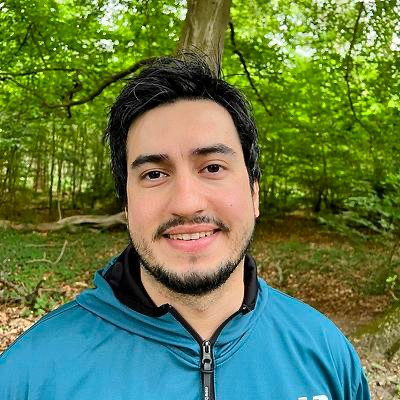
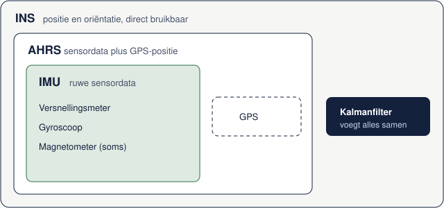

BAG en BGT
Ik controleer of panden, wegen en terreindelen goed liggen en kloppen met de bron. Zie ik iets geks, dan zoek ik het uit en stem ik het af met het team.
Hoi, ik ben Enes, GIS-databeheerder, technisch tekenaar, landmeetkundig operator en landmeter. Ik houd BAG, BGT en BOR op orde, werk tekeningen uit in AutoCAD en weet hoe het er buiten bij ligt. Dat doe ik al bijna acht jaar, vooral voor gemeenten en netbeheerders.
Mijn werk draait om goede geodata: beheren, controleren en tekenen. Hieronder zie je wat dat in de praktijk betekent.
Zorgen dat de basisregistraties en beheerdata kloppen, en dat collega's er makkelijk mee kunnen werken.
Ik controleer of panden, wegen en terreindelen goed liggen en kloppen met de bron. Zie ik iets geks, dan zoek ik het uit en stem ik het af met het team.
Beheerpaspoorten vullen voor grijs en groen, data omzetten en conversietabellen afstemmen. Zodat beheerders weten wat er buiten staat.
Geodata beheren in een geodatabase, delen via WMS en WFS, en controles automatiseren met FME of Python. Ik schrijf op wat ik doe, zodat je team zelf verder kan.
Een beheerder of beleidsmedewerker heeft een vraag, ik maak er een kaart of analyse van. Meestal in ArcGIS Online of ArcGIS Pro, soms een eigen webkaart.
Tekeningen uitwerken in AutoCAD en Civil 3D. Door mijn ervaring als landmeter weet ik hoe ingemeten data in elkaar zit.
Uitzettekeningen, matenplannen, bestek- en exploitatietekeningen. Strak getekend en klaar voor de uitvoering.
Volumeberekeningen van graafwerk en terreinen, ook op basis van drone- en lidardata. Wegontwerp in OpenRoads.
BOB-metingen, putten en strengen inmeten en rioolinspecties verwerken. Zo klopt je rioolbestand met wat er echt in de grond ligt.
Ingemeten CAD-tekeningen omzetten naar bruikbare GIS-data, zoals ik doe voor de areaalgegevens van een waterbedrijf.
Hier heb ik onder andere gewerkt
Bijna acht jaar meten, tekenen en data beheren, in Nederland en daarvoor in Turkije.
Gemeente Zevenaar, WMD, Gemeente Rotterdam, Utrechtse Heuvelrug
Gemeente Almere, Geo Data Team
Gasunie, De Romein (Veendam), WMD
Onderaannemers van Renaissance Construction, Izmir en Marmaris

Ik heb landmeetkunde gestudeerd in Izmir en daarna in Groningen een master gedaan in Smart Systems Engineering. In Turkije stond ik als landmeter op de bouw, in Nederland werk ik vooral voor gemeenten.
Wat ik mooi vind aan dit vak? Dat je iets buiten inmeet en het een paar dagen later terugziet op de kaart. Ik werk graag precies, stel liever één vraag te veel dan te weinig en schrijf dingen op, zodat anderen er ook mee verder kunnen.
Nederlands en Engels zeer goed, Turks moedertaal
Op afstand of op locatie, in overleg. Rijbewijs B.
Een paar dingen waar ik aan heb gewerkt of over heb geschreven. Meer staat in mijn portfolio en bij alle notities.

Als hoofdlandmeter zette ik zo'n 2000 glas- en aluminiumdelen uit voor het dak van dit winkelcentrum.

Wat is het verschil, en waarom doet het ertoe bij drone- en lidardata? Mijn samenvatting.
Lees de notitie
Mijn aantekeningen bij een paper over AI in de geomatica.
Lees de notitieEen vraag over BAG, BGT, BOR of een tekening? Of gewoon even kennismaken? Stuur me een mailtje, ik reageer graag.